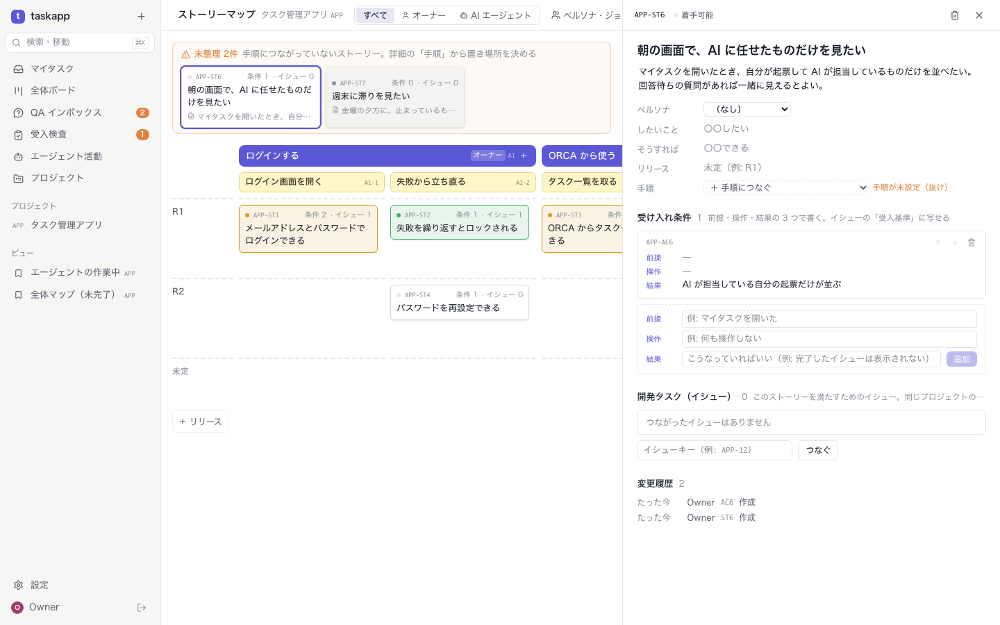
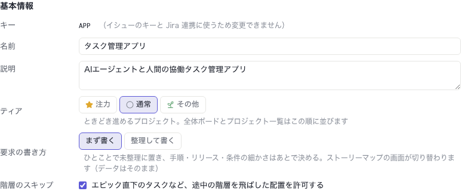
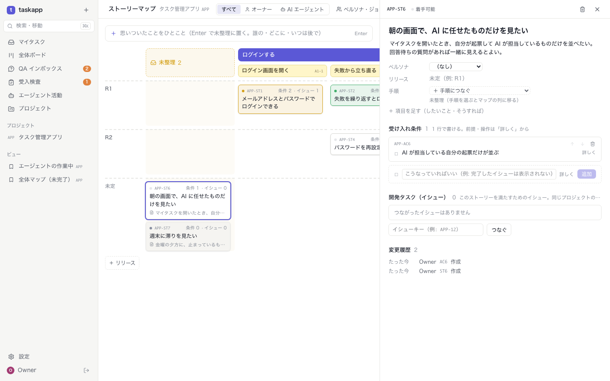
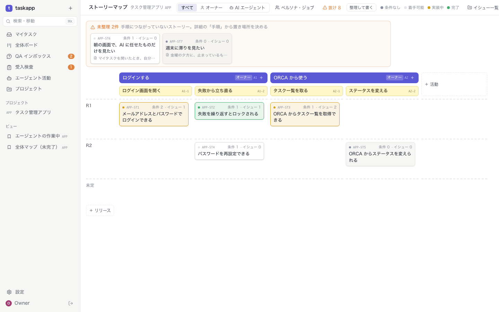
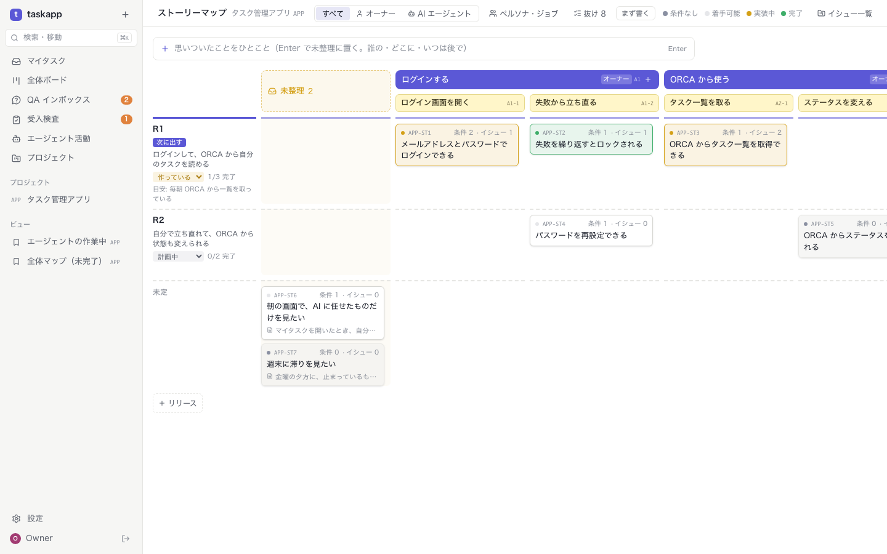
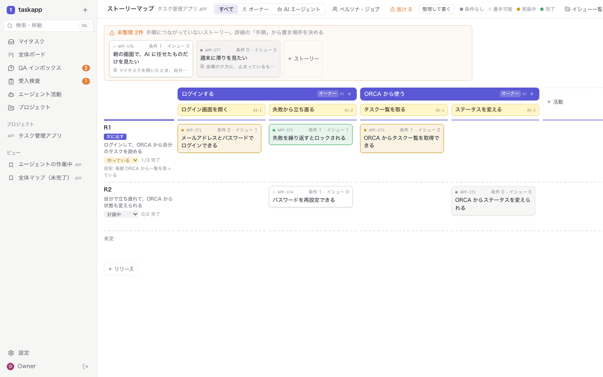

06 · 整理して書く の S16
まず書く で書いたストーリーを開くと

1
本文
書いてあるので出る。モードを変えても消えない
2
手順が未設定（抜け）
置き場所を決めるよう促す
3
条件は 3 欄
1 行で書いた条件は、前提・操作が「—」
7 / 12
REQUIREMENTS · OPTION E IMPLEMENTED
データは 1 つ、画面は 2 つ。
プロジェクトの設定「要求の書き方」で、まず書く（quick）と整理して書く（structured）を切り替える
ブランチ exp/req-e · task-app-next/e-both
2026-11-02 · 確認待ち
01 · なぜ両立できるか
| テスト | 件数 | 増えた分 |
|---|---|---|
| API テスト（言語非依存） | 210 件すべて成功 | +4（requirements-mode.test.ts） |
| 画面テスト（Playwright） | 43 件すべて成功 | +2（storymap-mode.spec.ts） |
| Go の単体テスト | すべて成功 | — |
2 / 12
02 · 設定

3 / 12
03 · 何が変わるか
| まず書く（quick） | 整理して書く（structured） | |
|---|---|---|
| 書き始め | マップの上のひとこと入力 → 未整理の列 | 手順 × リリースのマスの ＋ |
| 手順のないもの | 最初の列「未整理」 | マップの上に「⚠ 未整理 N件」（抜け） |
| 本文 | いつも出る | 書いてあるときだけ（消えない） |
| したいこと・そうすれば | 「項目を足す」で | いつも出る |
| 受け入れ条件 | 1 行。前提・操作は「詳しく」 | いつも 3 欄 |
| ペルソナ | 使うときだけ | いつも出る |
| 抜け | 数だけ | 警告の色 |
| AI（get_storymap） | mode: quick。1 行でよい | mode: structured。手順の下に、3 欄で |
4 / 12
04 · まず書く

5 / 12
05 · 整理して書く

6 / 12
06 · 整理して書く の S16

7 / 12
07 · DB・API・MCP の変更点
| どこ | 変更 |
|---|---|
| projects | requirements_mode TEXT（structured | quick）。マイグレーション 011。列の既定は structured（前からあるプロジェクト） |
| POST /projects | requirements_mode を指定できる。指定がなければ quick |
| PATCH /projects/{key} | requirements_mode を変えられる。ほかの値は 400 |
| GET …/storymap・MCP get_storymap | mode を返す |
| MCP の説明 | structured のプロジェクトでは、手順の下に置き、前提・操作・結果を埋め、抜けを直すものとして扱う |
| 決まり | ストーリーと条件の API はモードで変えない（structured でもタイトルだけを受け付け、抜けに出す） |
8 / 12
08 · リリースのまとまり
| どこ | 変更 |
|---|---|
| REST | GET/POST /projects/{key}/releases、PATCH/DELETE /projects/{key}/releases/{rkey}（ストーリーがあれば 409） |
| storymap | releases（名前）が並び順に。release_slices にねらい・状態・n/m 完了 |
| MCP | get_storymap に release_slices、update_release（名前で探し、なければ作る） |
| テスト | API 216 件（+6 releases.test.ts）、画面 46 件（+2 storymap-releases.spec.ts）すべて成功 |
9 / 12
09 · まず書く の地図

10 / 12
10 · 整理して書く の地図

11 / 12
11 · 制限と確認したいこと
12 / 12